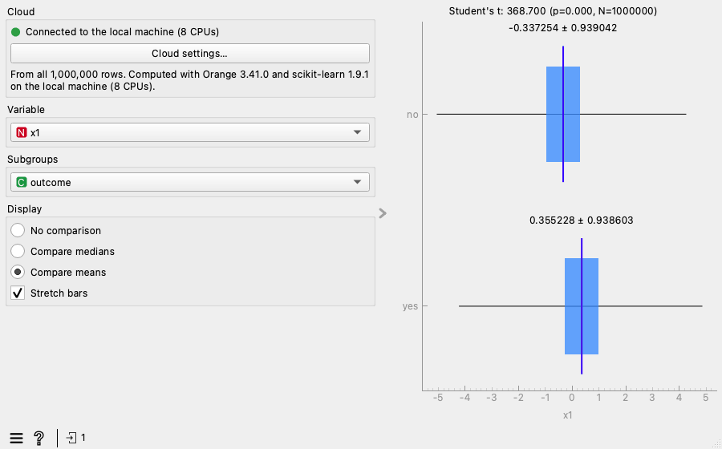

Box plots of a column of a cloud table, computed on all rows on the machine.

Like every Cloud widget, it has a Cloud box at the top: whether a machine is connected, Cloud settings…, and what the last job ran with, how long it took and what it cost. See Cloud widgets.
The header shows Orange's test for the groups (Student's t, ANOVA or χ²), computed from all rows.